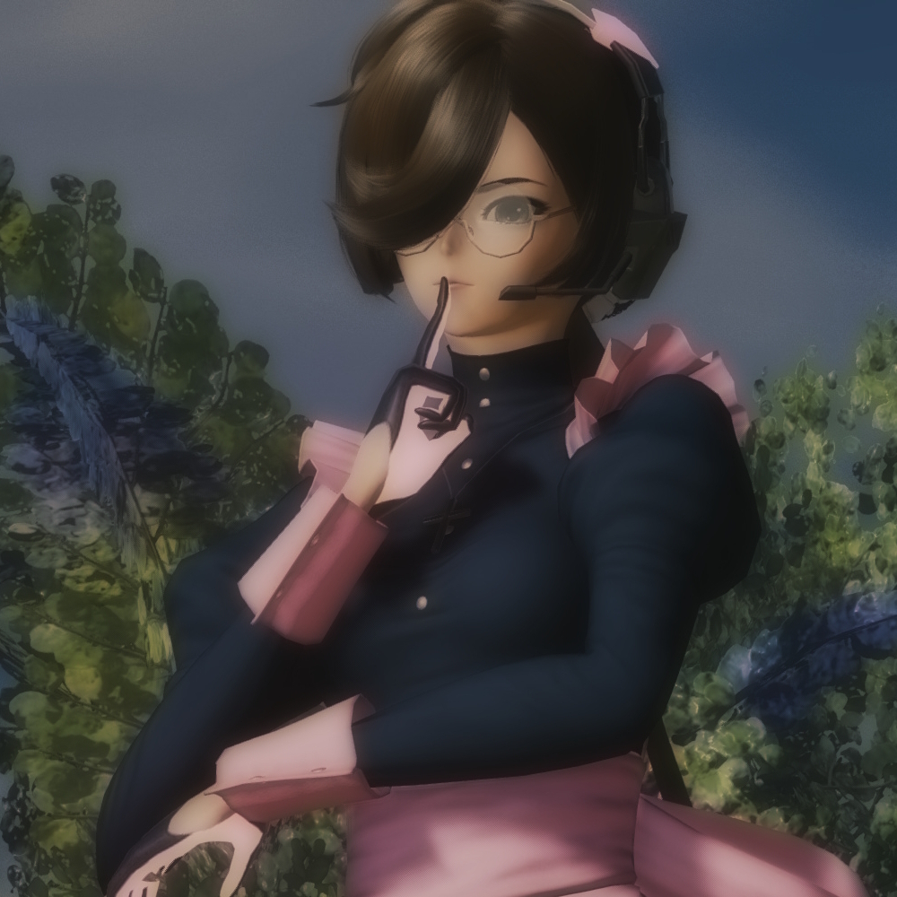

Character Page  Ninatori Fullname: Nina Victoria Gage Nickname(s): Ninatori Species: Nationality: Czech-French Language(s): Czech, French & English Birthdate: 5th of December 2766 Height: 162 cm Weight: 54 kg MBTI: INFJ-T Interests: Faith Career: Nun Relatives: Casper (older brother) & Petra (older sister) Partner(s): - Lotsa lore here! Gallery Lotsa pics here! Game origins Phantasy Star Online 2 New Genesis